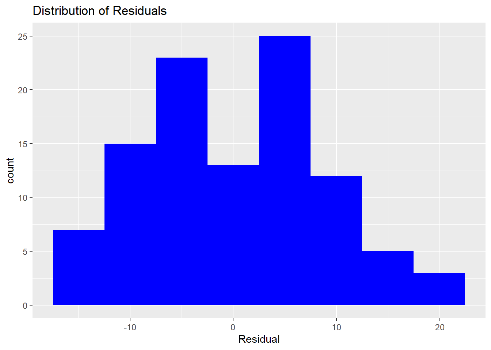

Lesson 9 Simple Linear Regression
The purpose of this tutorial is to continue our exploration of multivariate statistics by conducting a simple (one explanatory variable) linear regression analysis. We will continue to use the concrete strength data from Lesson 8.
library(tidyverse)
Con <- read_csv("Data/ConcreteStrength.csv")
## rename some columns to make them easier to use in R
Con <- Con %>% dplyr::rename(Strength = "Compressive Strength (28-day)(Mpa)",
FlyAsh = "Fly ash",
CoarseAgg = "Coarse Aggr.",
FineAgg = "Fine Aggr.",
AirEntrain = "Air Entrainment")9.1 Linear Regression
9.1.1 Review of the basics
The lm function in R constructs—as its name implies—a linear model from data. Recall that a linear model is of the form \(Y = \beta_0 + \beta_1 X_1 + ... + \beta_n X_n\), where \(Y\) is the value of the response variable and \(X_i\) is the value of the explanatory variable(s).
“Fitting a line” means finding values for each \(\beta_i\) so that the error (or “residual”) between the fitted line and the observed data is minimized. We think of each \(\beta_i\) as the slope of the line (also called the “coefficient” or “parameter”). The slopes learned by the linear regression algorithm can be used in two ways:
Root cause analysis: The size, direction (positive or negative), and statistical significance of each slope provides us with a better understanding of the factors that might cause variation in the value of the response variable \(Y\). Example: If we have a regression equation \(Sales = \beta_0 + \beta_1 Advertising\), then we can use \(\beta_1\) to better understand the impact of our spending on advertising on sales. Obviously, we want every dollar we spend on advertising to result in at least a dollar increase in sales, otherwise we are losing money on our advertising efforts. A statistically insignificant value of \(\beta_1\) suggests that advertising has no impact on sales.
Prediction: The parameterized linear model \(Y = \beta_0 + \beta_1 X_1 + ... + \beta_n X_n\) can be solved for values of the explanatory variables \(X_i\). This allows us to predict values of \(Y\) using the known values of \(X\). Example: If we have a regression equation \(Sales = \beta_0 + \beta_1 Advertising\) and the learned values of \(\beta_0\) and \(\beta_1\), then we can plug-in our expected advertising spend (\(Advertising\)) and predict our sales for the coming period.
9.1.2 Formula notation
Given a tibble of data, we have to tell the lm function which column to use as the response variable and which column (or columns, in multiple regression) to use as the explanatory variable. We do this using the formula notation. Thus, the general form of the function call is: lm(Y ~ X1 + X2 + ... + Xn), where Y is the response variable and each Xi is an explanatory variable. Again, we read the tilde (~) symbol as “as a function of”. So this lm call gives us a model in which variable (column) Y is a function of some other columns named X1, etc.
In our first simple regression, the response variable is Strength and the explanatory variable is FlyAsh:
##
## Call:
## lm(formula = Strength ~ FlyAsh, data = Con)
##
## Coefficients:
## (Intercept) FlyAsh
## 26.27637 0.04405Note that the command does not give much information by default: It simply builds the model and provides two values:
- The y-intercept \(\beta_0\) (which we generally ignore in root cause analysis)
- The coefficient \(\beta_1\), which in this case is interpreted as the slope for FlyAsh.
Here we conclude that a one unit increase in fly ash is associated with a 0.04405 increase in compressive strength. Of course, we need more information about the regression to make any reliable conclusions. Does the model satisfy the assumptions of linear regression? Does the model fit the data (high R2)? The the fly ash coefficient significantly different from zero?
9.1.3 Model quality and statistical significance
We will come back to the question of whether the linear model is valid (whether it satisfies the assumptions of the technique). First we want to understand how to access the more detailed information provided by the lm() function. To do this, we typically store the linear model in an intermediate R object and then access the model using other functions. Specifically:
- Create an intermediate object (I call it “model.1” below) to hold the results of the
lmfunction. - Use
summary()to get a more traditional report of the regression output. - Use
confintto get the 95% confidence intervals around the fly ash coefficient.
##
## Call:
## lm(formula = Strength ~ FlyAsh, data = Con)
##
## Residuals:
## Min 1Q Median 3Q Max
## -15.8827 -6.1842 -0.1203 6.1940 19.0176
##
## Coefficients:
## Estimate Std. Error t value Pr(>|t|)
## (Intercept) 26.276368 1.690565 15.54 < 2e-16 ***
## FlyAsh 0.044048 0.009854 4.47 2.05e-05 ***
## ---
## Signif. codes: 0 '***' 0.001 '**' 0.01 '*' 0.05 '.' 0.1 ' ' 1
##
## Residual standard error: 8.501 on 101 degrees of freedom
## Multiple R-squared: 0.1652, Adjusted R-squared: 0.1569
## F-statistic: 19.98 on 1 and 101 DF, p-value: 2.05e-05## 2.5 % 97.5 %
## (Intercept) 22.92274091 29.62999524
## FlyAsh 0.02449962 0.063596689.1.4 Interpretation
You should be getting comfortable with the output from statistical packages by now (having used regression in Excel and SAS). The summary function in R starts with a five-number summary of the residuals. We will plot the residuals in a moment, so we do not need to consider the distribution of the residuals at this point.
Next, we get a table of the coefficients. As before, we focus on the estimated value of the coefficient itself (a one-unit increase in fly ash is associated with a 0.044048 increase in strength) and the p-value (2.05 x 10-05). R uses old-school notation ("***") to indicate at a glance that this is highly significant.
Finally, the summary provides information on the overall model quality. We focus on the R2 fit statistic (0.1652), which is not particularly good despite the apparently strong relationship between fly ash and compressive strength. Of course, these are exactly the same results you saw using both Excel and SAS Enterprise Guide, so they should look familiar.
So what is the point of the confint function? Our best estimate of the slope for fly ash is 0.044048. We know the slope is unlikely to be zero because the p-value is very small. However, we also know that the overall model is not very good (low-ish R2). How should we process all these different types of information? One way is to simply calculate the 95% confidence intervals around the coefficient estimate. The confint function above tells us that we can be 95% confident that the true slope of the fly ash line falls somewhere between 0.02449962 and 0.06359668. The R notation might look a bit odd, but is simply says there is a 2.5% probability that the slope is less than 0.02… and a 97.5% probabilty the slope is less that 0.06… (which means a 2.5% probability that it is greater than 0.06…). This interval does not include zero (which we know already from the p-value) but does vary enough to stop us putting too much faith in the precise coefficient estimate 0.044048. We conclude (provisionally) that fly ash has some kind of positive impact on concrete strength, but can say too much more than that.
9.2 Regression diagnostics
Any regression model you build might be completely bogus. You need to check before expending any effort on interpreting the regression model or coefficients. Note that this is a critical shortcoming of Excel: it does not provide an easy way to check the distribution of regression residuals. Until it does so, Excel is not an appropriate tool for real analytics.
How do we know if a regression model is bogus? Recall that an important assumption of the linear regression model is that the errors (residuals) are normally distributed. That means some of the residuals are positive, some are negative, but most are small and close to zero. The easiest way to assess whether the residuals are normal is to plot them in a histogram or boxplot.
9.2.1 Plots in base R
The residuals() function returns a vector containing the residual for each row in the dataset. Recall that the residual is the difference (or “error”) between the observed value of the response variable and the predicted value based on the linear model. We can plot theses residuals just like any other data using base R functions like hist and boxplot. Although not as pretty as gglplot graphics, they give us a quick sense for whether our model is valid.
Note that like most R functions, residuals can be shortened to save a few keystrokes:

Quantile-quantile (Q-Q) plots show the same information. The qqnorm function draws the basic plot, but an additional call needs to be made to the qqline function to get a reference line, as in SAS:
Finally, it is helpful to get a graphical representation of overall model quality. Recall that the R2 is only 0.1652. But what does it mean to explain 16.5% of the variance in concrete strength using fly ash? The predicted versus actual plot (which SAS gives us as part of is standard suite of regression diagnostics) provides a good way to visualize the overall quality of the model.
Ideally, we would have a perfect 45-degree line through the data points meaning that observed and predicted are similar. In this plot you see some deviation (in accordance with the low R2).
9.2.2 ggplot data
Functions like residuals and fitted provide vectors as their output data structure. ggplot and other tidyverse functions require tibbles as input. Thus, creating ggplot visuals from these functions requires some extra work. The tidyverse “broom” package provides functions to help make the output from base R functions “tidy”. To get a sense for how this works, do the following:
- Load the broom library. It is installed with the tidyverse, but is not loaded by default.
- Pass the model to the
augmentfunction of the broom package using a pipe%>%. Augment extracts the “augmented” information from the model (rediduals, predicted values, and so on). - Display the first few rows of the resulting tibble using the
headfunction.
## # A tibble: 6 x 9
## Strength FlyAsh .fitted .se.fit .resid .hat .sigma .cooksd .std.resid
## <dbl> <dbl> <dbl> <dbl> <dbl> <dbl> <dbl> <dbl> <dbl>
## 1 35.0 105 30.9 0.943 4.09 0.0123 8.53 1.46e-3 0.484
## 2 32.3 191 34.7 0.934 -2.42 0.0121 8.54 5.00e-4 -0.286
## 3 35.4 191 34.7 0.934 0.760 0.0121 8.54 4.95e-5 0.0900
## 4 42.1 190 34.6 0.930 7.43 0.0120 8.51 4.69e-3 0.880
## 5 26.8 144 32.6 0.839 -5.80 0.00974 8.52 2.31e-3 -0.686
## 6 18.1 115 31.3 0.902 -13.2 0.0113 8.44 1.40e-2 -1.57As you can see from the head output, the augmented tibble includes the observed values of Strength and FlyAsh in addition to the predicted value (.“fitted”) and the residual (“.resid”). You can confirm that .resid = Strength - .fitted.
9.2.3 ggplot histogram
Now that we have the augmented model data in a tibble, we can use the ggplot functions to create diagnostic plots:
model.1 %>% augment %>% ggplot() +
geom_histogram(mapping = aes(x=.resid), bins=8, fill="blue") +
ggtitle("Distribution of Residuals") +
xlab("Residual")
9.2.4 ggplot predicted versus actuals
Here I make two improvements over the base R version above. First, I use the min and max functions to get an adequate range for both the X and Y axis. Second, by using the same range for both axes, I can draw a 45-degree reference line (slope = 1)
obs_max <- max(Con$Strength)
obs_min = min(Con$Strength)
model.1 %>% augment %>% ggplot() +
geom_point(mapping = aes(x=.fitted, y=Strength), fill="blue") +
ggtitle("Predicted vs. Actual") +
ylab("Observed") +
xlab("Predicted") +
xlim(obs_min, obs_max) +
ylim(obs_min, obs_max) +
geom_abline(slope=1, intercept=0, color="blue", size=1)This provides a slightly prettier graph. But the conclusion is still the same: this is not a good explanatory model.